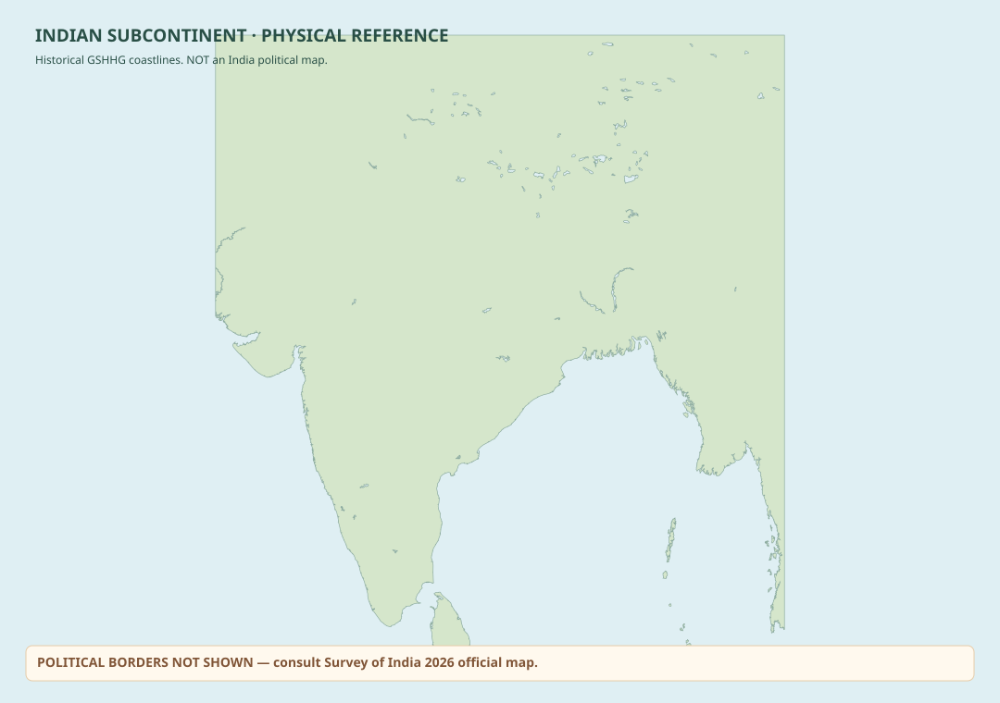

INDIA / INTERACTIVE MAP
India region · physical explorer.
Map key & what is available Boundary sources · layers · navigation help
The separately supplied Survey of India claim outline has been deliberately excluded from this public preview pending rights review. No certified 2026 political boundary layer is bundled.
Generalized river, shoreline and land features from labelled historical sources; not street-level geographic coverage.
State/UT names can be searched in Hindi or English. Exact state polygons, districts and villages are not bundled as certified geography.
Drag to pan, scroll/pinch to zoom, use Reset to return to India. Search a city, select a listed region, or switch to World Explorer.

Generalized physical geography. Boundaries are not certified.
See exactly which geographic layers are loaded
Tile counts and sample locations are inventory checks, not evidence of nationwide completeness, current accuracy, or official recognition.
Inspect real map-data coverage at a location
Which exact historical and optional transport tiles exist here? This only checks the tile catalogue, never legal boundaries, road completeness or feature-level accuracy.
Research source inventory only
Note: a tile containing one river or one named city does not mean its whole cell is mapped. Overscaling beyond its source zoom cannot create new geographic detail.LOCALITY EXPLORER / VERIFIED SOURCE IDENTITY, NOT SURVEY LOCATION
Places around your selection
Select a city or enter coordinates to discover nearby source-listed places.
REGION INSPECTOR
Select a region to explore
Search the list or choose a polygon directly on the map. Selection will animate to its geographic extent.
PLACE LAB / 04 · SOURCE-BACKED
Compare two places.
Understand straight-line geography through a pair of source-listed cities. The path is not a travel route.
Choose two places to compare.
Approximate spherical calculations (WGS84 coordinates); source labels are not independently survey certified. No roads, journeys, disputed-territory decisions or official boundaries are inferred.
RESEARCH WORKSPACE / 03
Explore. Measure. Keep.
Local tools for geographic exploration. Not official measurements, turn-by-turn directions, or a boundary certification service.
Click-to-add off · manual input available
No points yet.
Add 2 points for distanceDistances use a spherical great-circle approximation; area uses a spherical polygon approximation. Segments are straight lines, not road routes. Not for surveying, legal boundaries or navigation.
Select a city or coordinates, then save. Bookmarks stay only in this browser's local storage. Avoid saving sensitive locations on shared computers.
Add a permitted local research GeoJSON overlay with roads, railway lines, waterways, or place points. Overlay data remain in memory and are never silently treated as authoritative or uploaded.
No local data overlay loaded.
Requires a connected network of road LineStrings in your imported GeoJSON. Results follow source vertices only and are NOT driving directions or a navigation service.
No route calculated yet.
Lines require kind=road/railway/waterway or source highway/railway/waterway tags; settlement points require kind=settlement or place tags. Data are not automatically approved for redistribution.
These are local content inventories. A feature count does not establish India-wide completeness, authoritative accuracy, valid reuse rights or public release readiness.